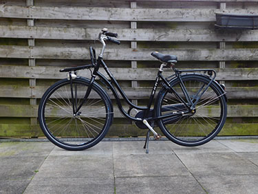

Elk rijwiel vertelt een uniek verhaal van herstel, vernieuwing en karakter. Duik in onze collectie en ervaar de bijzondere reis van elke fiets.
In het hart van de stad vond ik een verwaarloosde, oude stadsfiets. Met liefde en aandacht voor detail repareerde ik de versleten onderdelen, verving ik roestige kettingen en vernieuwde ik het verroeste frame. De eens vergeten fiets werd een kleurrijk, opgeknapt stadsjuweel, perfect voor dagelijkse ritten. Nu geniet hij weer van de drukte van de stadsstraten.